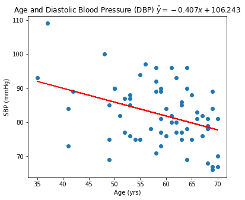

Acupuncture Analysis
Goal: To learn how to apply my knowledge of hypothesis testing, confidence intervals, and linear regression using Python statistical packages.
PythonA/B Testing, Confidence Intervals, Linear Regression
The full project can be found on my GitHub.
Background
The study was designed to determine the effect of acupuncture, with needle manipulation at different frequencies, on patients with hypertension on two pressure points, ST9 and LR3 (see picture below).
Patients were divided into four treatment groups:
- ST9 High-Frequency Group (ST9-H)
- ST9 Low-Frequency Group (ST9-L)
- LR3 High-Frequency Group (LR3-H)
- LR3 Low-Frequency Group (LR3-L)
Systolic Blood Pressure (SBP) and Diastolic Blood Pressure (DBP) for each patient was recorded at baseline, 6 weeks, 12 weeks, 16 weeks, 20 weeks, and 24 weeks of the experiment. Daytime blood pressures (6am-10:59pm) were measured once every 30 minutes and nighttime blood pressures (11pm-5:59am) were measured once an hour, with the first 2 hours of daytime (6am-8am) also being classified as morning. These measurements were then used to calculate the mean of the following at each of the time intervals listed above:
- 24-hr DBP
- 24-hr SBP
- Daytime DBP
- Daytime SBP
- Nighttime DBP
- Nighttime SBP
- Morning DBP
- Morning SBP
Question 1: Is there a significant difference in the proportion of patients above or below age 60, who have high 24-hour systolic blood pressure at the end of the experiment (24 weeks)?
$H_a:$ There is a difference in the proportion of high 24-hour SBP values (130+ mmHg) at 24 weeks between individuals less than 60 years and greater than or equal to 60 years.
Using a Z-test for the difference between two population proportions, with a 5% level of significance, it appears that the proportion of those below age 60 with high systolic blood pressure is the same as it is for those age 60+. This is interesting because systolic blood pressure is supposed to increase from age 30 onward, so it would be reasonable to expect a higher proportion of those over age 60 to have higher blood pressures. (source)
Question 2: Is there a significant difference in the proportion of patients with high systolic blood pressure across the four treatment groups at the end of the experiment?
$H_a:$ At least one of the groups has a proportion with high SBP (130+ mmHg) that is different than the other groups.
Using a Chi-Square goodness of fit test, with a 5% level of significance, it appears at least one of the four treatment groups has a higher proportion of subjects with high systolic blood pressure.
More investigation would have to be performed in order to determine which treatment group it was and whether the blood pressure, however this could indicate one or more of the treatments was effective.
Question 3: Is there a linear relationship between age and 24 hour diastolic blood pressure at the end of the experiment?
$H_a:$ There is a linear relationship between age and 24hr DBP.
Using an F test, with a 2.5% level of significance, it appears there is a linear relationship between age and 24 hour diastolic blood pressure. In the model, the coefficient for age was found to be -0.4067, meaning that a patient who is one year older than another patient will expect to see a 24 hour diastolic blood pressure that is .4067 mmHg lower at the end of the experiment. This is not surprising as diastolic blood pressure is known to decrease starting at roughly 60 until at least 84. (source)
The scatterplot and line of best fit can be seen below:

Question 4: Is there a linear relationship between age and 24 hour systolic blood pressure at the end of the experiment?
$H_a:$ There is a linear relationship between age and 24hr SBP.
Using an F test, with a 5% level of significance, it appears there is NOT a linear relationship between age and 24 hour systolic blood pressure. In other words, age is a not a good predictor of ones' 24 hour systolic blood pressure.
While diastolic blood pressure may depend on age, our data indicates that systolic blood pressure does not. This is also interesting as the source linked earlier stated that systolic blood pressure is supposed to steadily increase with age.
Question 5: Can we make a better linear regression model for predicting 24 hour systolic blood pressure by adjusting for other factors?
5.1 Constructing the model
Given that the point of the experiment was to test the efficacy of different kinds of acupunture treatments, I would like to incporporate this information into the model. Furthermore, many medical studies adjust for gender and because we've already shown age is correlated with systolic blood pressure, I'll include both those variables too.Using dummy variables for the treatment groups, we have the following coding scheme:
- $x_1 = \left\{\begin{aligned} 1 &\text{ if patient in ST9-H} \\ 0 &\text{ if patient not in ST9-H} \end{aligned} \right.$
- $x_2 = \left\{\begin{aligned} 1 &\text{ if patient in ST9-L} \\ 0 &\text{ if patient not in ST9-L} \end{aligned} \right.$
- $x_3 = \left\{\begin{aligned} 1 &\text{ if patient in LR3-H} \\ 0 &\text{ if patient not in LR3-H} \end{aligned} \right.$
- $x_4 = \text{age in years}$
- $x_5 = \left\{\begin{aligned} 1 &\text{ if patient is male} \\ 0 &\text{ if patient is female} \end{aligned} \right.$
5.2 Checking for statistical significance in our predictors
$H_0:$ None of our six independent variables explain the variation in 24hr SBP.$H_a:$ At least one of our six independent variables explains the variation in 24hr SBP.
Using an F-test with a 5% level of significance, none of our predictors explain the variation when predicting 24 hour systolic blood pressure after 24 weeks of the experiment.
This could mean that a linear model is not appropriate, but it could also be a problem with the predictors themselves.
5.3 Investigating treatment group, age, and gender
After inspecting the regression summary, a t-test indicates the group_2 predictor as being statistically significant, with a p-value of 0.020. The coefficient of -8.1426 shows that patients who are in group_2 have a 24 hour systolic blood pressure that is 8.1426 lower than the baseline group, group 4. Perhaps this indicates that the ST9-L acupuncture treatment was effective.
Conclusion(s)
Unfortunately, no conclusive evidence has been found so far that any of the treatments are effective at combating hypertension. However, there was some evidence that adjusting the twirling frequency of an acupuncture treatment could produce different effects when applied to the same acupuncture site.
As a result, the article notes that in future clinical trials, close attention needs to be paid to an acupuncture treatment's parameters, such as twirling frequency, in order to more accurately compare one treatment against another.